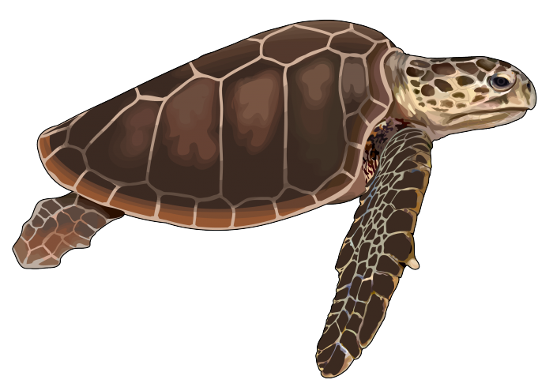

¿Que es tortuga y sus Caracteristicas?
También conocidos como quelonios, las tortugas son un tipo de reptiles caracterizados por el sólido caparazón que protege sus órganos vitales del que emergen la cabeza, las patas y la cola. Son animales ovíparos que cavan sus nidos en la tierra, donde llevan a cabo la incubación de los huevos.
¿De que se alimentan las tortugas?
Dependiendo de la especie, a las tortugas marinas les gusta comer algas, medusas, calamares, percebes, esponjas y anémonas de mar, entre otras criaturas. Sin embargo las tortugas verdes, que son herbívoras, se alimentan principalmente de pastos marinos y algas.
¿Que tipo de animal es una tortuga?
reptiles Se trata de las tortugas: reptiles pertenecientes al orden de los Testudines que se caracterizan por su longevidad, movimientos lentos, un fuerte caparazón, patas cortas, rostros carismáticos y la ausencia de dientes, a pesar de que algunas son omnívoras, carnívoras o herbívoras.

¿Donde viven las tortugas?
Las tortugas: desde la tierra hasta el mar Viven en ambientes de agua dulce (habitan lagos, ríos y pantanos); así como en ambientes terrestres y marinos. Se encuentran en todos los continentes con la excepción de Antártica y tienen características muy particulares según el hábitat donde viven.
¿Que tipo de tortuga es venenosa?
Se le conoce como Chelydra serpentina y es una especie exótica originaria de América. La tortuga fue encontrada en El Portil, en la costa de Huelva. Se trata de un ejemplar de medio metro de longitud y es una especie peligrosa para el ser humano.
¿Que tipos de tortugas existen?
- Tortugas de caja (Terrapene spp.)
El primer tipo de tortugas terrestres que nos encontramos son las tortugas de caja, que forman parte de la familia Emydidae. Lo que destaca de estas tortugas de tierra es que pueden cerrar su caparazón de forma hermética gracias a una articulación dispuesta en el plastrón. - Tortuga estrellada (Geochelone elegans)
Este tipo de tortuga de tierra habita en la India, específicamente en Pakistán, Sri Lanka y en el sudeste hindú, con una variedad diferente para cada región. Se distribuye en una variedad de ecosistemas, desde bosques húmedos, bosques semiáridos, pastizales semiáridos hasta semidesiertos, pudiendo adaptarse a ambas condiciones secas o húmedas. Un dato curioso sobre estas tortugas terrestres es que su tiempo de reproducción está sincronizado con la temporada de lluvias. Su cuerpo es de color amarillo, mientras que su caparazón es oscuro con líneas amarillas que se unen en formaciones concéntricas similares a pirámides, de aquí su nombre común “tortuga estrellada”. - Tortuga rusa (Testudo horsfieldii)
También conocida como tortuga afgana, mide entre 16 a 23 centímetros, siendo las hembras más grandes que los machos. Soporta temperaturas extremas tanto de frío como de calor, por lo que su actividad se reduce a pocos meses al año. Es común que se refugie en madrigueras que ella misma cava para refugiarse de la temperatura, donde hiberna hasta que el tiempo mejore. - Tortuga mediterránea (Testudo hermanni)
Como su nombre lo indica, es originaria del mar Mediterráneo, llegando a España, Italia, Grecia, Croacia y Francia, entre otras regiones. Cada zona tiene subespecies diferentes, pero todas tienen en común caparazones que muestran patrones negros y verdosos muy interesantes.